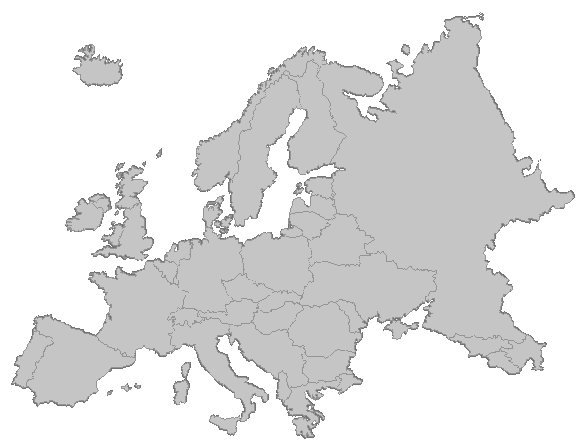

|
|
. | ||
|
Полезная информация для начинающих путешественников
Короткие отчерки о моих путешествиях, городах и странах в которых мне пощастливелось побывать.

К сожалению коллекция путешесвий пополняться будеть редко, поскольку я всего лишь любитель и не слишком часто покидаю пределы Нижегородской области.

Created 18'08.97